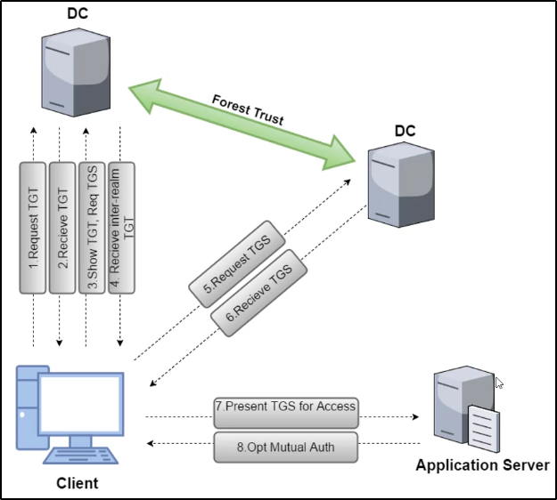

Trust Flow Across Forest
Supponiamo che 2 DC di 2 Forest differenti,
abbiano una certa trust.
Ora, se voglio accedere ad un servizio disponibile
su un altra foresta, il processo è simile al chiedere
un TGT/TGS:
La differenza sta che una, una volta richiesto e dato un TGT
al mio DC, se richiedo un TGS mi da un inter-realm-TGT!!
Con questo inter-realm-TGT posso richiedere un TGS
all'altro DC dell'altra foresta.


Per cominciare, otteniamo la trust key per la inter-forest trust:


Ora forgiamo un intra-forest TGT:


Infine, injectiamo il TGS e controlliamo se l'abbiamo ottenuto con "klist":